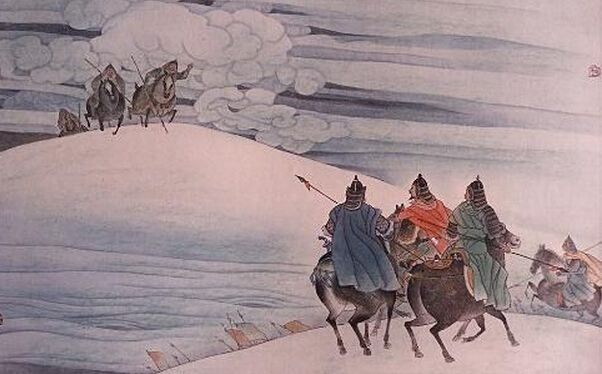

|
|  | 从军行 烽火照西京，心中自不平。 牙璋辞凤阙，铁骑绕龙城。 雪暗凋旗画，风多杂鼓声。 宁为百夫长，胜作一书生。 |
词句注释 ⑴从军行：为乐府《相和歌·平调曲》旧题，多写军旅生活。 ⑵烽火：古代边防告急的烟火。西京：长安。 ⑶牙璋：古代发兵所用之兵符，分为两块，相合处呈牙状，朝廷和主帅各执其半。此指代奉命出征的将帅。凤阙：宫阙名。汉建章宫的圆阙上有金凤，故以凤阙指皇宫。 ⑷龙城：又称龙庭，在今蒙古国鄂尔浑河的东岸。汉时匈奴的要地。汉武帝派卫青出击匈奴，曾在此获胜。这里指塞外敌方据点。 ⑸凋：原意指草木枯败凋零，此指失去了鲜艳的色彩。 ⑹百夫长（zhǎng]）：一百个士兵的头目，泛指下级军官。 |
|
白话译文 边塞的报警烽火传到了长安，壮士的心怀哪能够平静。 朝廷的将帅刚出了宫门，身着铁甲的骑士就直捣据点。 雪搅昏天军旗褪了彩色，风狂刮的声音裹着鼓声。 我宁作百夫长冲锋陷阵，也不耐守笔砚做个书生。 |
|

唐诗学习网 Copyright© 2018 All Right Reversed
|